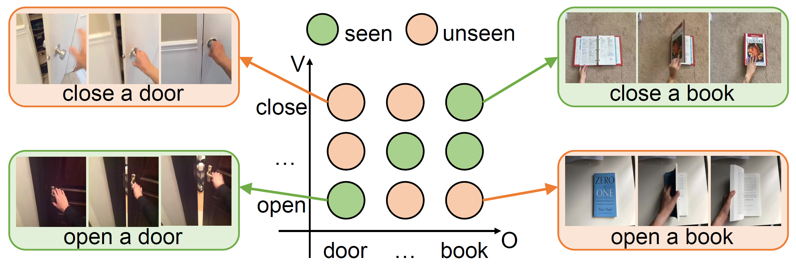

C2C: Component-to-Composition Learning for
Zero-Shot Compositional Action Recognition
Seen: Open a door

Seen: Close a book
Unseen: Close a door
Compositional actions consist of dynamic (verbs) and static (objects) concepts. Humans can easily recognize unseen compositions using the learned concepts. For machines, solving such a problem requires a model to recognize unseen actions composed of previously observed verbs and objects, thus requiring, so-called, compositional generalization ability. To facilitate this research, we propose a novel Zero-Shot Compositional Action Recognition (ZS-CAR) task. For evaluating the task, we construct a new benchmark, Something-composition (Sth-com), based on the widely used Something-Something V2 dataset. We also propose a novel Component-to-Composition (C2C) learning method to solve the new ZS-CAR task. C2C includes an independent component learning module and a composition inference module. Last, we devise an enhanced training strategy to address the challenges of component variation between seen and unseen compositions and to handle the subtle balance between learning seen and unseen actions. The experimental results demonstrate that the proposed framework significantly surpasses the existing compositional generalization methods and sets a new state-of-the-art. The new Sth-com benchmark and code are available at the page.
In this paper, we introduce the compositional generalization perspective to understand actions, by proposing a novel Zero-Shot Compositional Action Recognition (ZS-CAR) task.
